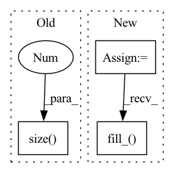

Pattern ID :13054

Before Change
r_prev[:, 1] = torch.cumsum(
self.x[0, :, :, self.blank_index], 0
).unsqueeze(2)
r_prev = r_prev.view(-1, 2, g.size(0))
// scores for candidates
// x_ = self.x.unsqueeze(3).repeat(1, 1, 1, beam_size, 1).view(2, -1, beam_size * beatch_size, vocab_size)
After Change
g: prefix
device = g.device
prefix_length = g.size(1)
num_candidates = candidates.size(-1)
if memory is None:
// r_prev: (max_enc_len, 2, batch_size * beam_size)
r_prev = torch.Tensor(
self.max_enc_len, 2, self.batch_size * self.beam_size
).to(device)
r_prev.fill_(-np.inf)
// Accumulate blank posteriors at each step
r_prev[:, 1] = torch.cumsum(self.x[0, :, :, self.blank_index], 0)
r_prev = r_prev.view(-1, 2, self.batch_size * self.beam_size)
else:
r_prev = memory
r = torch.Tensor(
prefix_length, 2, self.beam_size, num_candidates
).fill_(-np.inf)
// scores for candidates
// x_ = self.x.unsqueeze(3).repeat(1, 1, 1, beam_size, 1).view(2, -1, beam_size * beatch_size, vocab_size)
In pattern: SUPERPATTERN
Frequency: 4
Non-data size: 3
Instances
Fragment ID: 44037455
Project Name: speechbrain/speechbrain
Commit Name: d12dddc4c6eb1769c033bdda340ccc53e5538335
Time: 2020-09-21
Author: ff936tw@gmail.com
File Name: speechbrain/decoders/ctc.py
M Class Name: CTCPrefixScorer
N Class Name: CTCPrefixScorer
M Method Name: forward_step(4)
N Method Name: forward_step(3)
M Parent Class:
N Parent Class:
M File Name: speechbrain/decoders/ctc.py
N File Name: speechbrain/decoders/ctc.py
M Start Line: 36
M End Line: 51
N Start Line: 35
N End Line: 69
'>
Before Change
assert inMask.dim() == 4, "mask must be 4 dimensions"
inMask = inMask.float()
ntimes = 2**nlayers
inMask = F.interpolate(inMask, (inMask.size(2)//ntimes, inMask.size(3)//ntimes), mode="nearest")
inMask = inMask.detach().byte()
return inMask
After Change
convs = []
inMask = Variable(inMask, requires_grad = False)
for id_net in range(conv_layers):
conv = nn.Conv2d(1,1,4,2,1, bias=False)
conv.weight.data.fill_(1/16)
convs.append(conv)
lnet = nn.Sequential(*convs)
if inMask.is_cuda:
'>
Fragment ID: 44037454
Project Name: kumapowerliu/rethinking-inpainting-medfe
Commit Name: 17d04d208950c9c4e2e8bc5251cf06205ec15285
Time: 2020-11-07
Author: 33801357+KumapowerLIU@users.noreply.github.com
File Name: util/util.py
M Class Name: AnonimousClass
N Class Name: AnonimousClass
M Method Name: cal_feat_mask(3)
N Method Name: cal_feat_mask(2)
M Parent Class:
N Parent Class:
M File Name: util/util.py
N File Name: util/util.py
M Start Line: 78
M End Line: 83
N Start Line: 76
N End Line: 93
'>
Before Change
max_seq_size = max(seq_lengths)
max_target_size = max(target_lengths)
feat_size = batch[0][0].size(0)
batch_size = len(batch)
seqs = torch.zeros(batch_size, 1, feat_size, max_seq_size)
targets = torch.zeros(batch_size, max_target_size).to(torch.long)
After Change
target_lengths = [len(s[1]) - 1 for s in batch]
max_seq_sample = max(batch, key=seq_length_)[0]
max_target_sample = max(batch, key=target_length_)[1]
max_seq_size = max_seq_sample.size(0)
max_target_size = len(max_target_sample)
feat_size = max_seq_sample.size(1)
batch_size = len(batch)
seqs = torch.zeros(batch_size, max_seq_size, feat_size)
targets = torch.zeros(batch_size, max_target_size).to(torch.long)
targets.fill_(pad_id)
for x in range(batch_size):
sample = batch[x]
tensor = sample[0]
'>
Fragment ID: 44037461
Project Name: sooftware/lasr
Commit Name: 7fae6560736539af391b014539d120d2475de396
Time: 2021-05-08
Author: sooftware@Soohwanui-MacBookPro.local
File Name: lightning_asr/data/data_loader.py
M Class Name: AnonimousClass
N Class Name: AnonimousClass
M Method Name: _collate_fn(2)
N Method Name: _collate_fn(1)
M Parent Class:
N Parent Class:
M File Name: lightning_asr/data/data_loader.py
N File Name: lightning_asr/data/data_loader.py
M Start Line: 29
M End Line: 49
N Start Line: 29
N End Line: 63